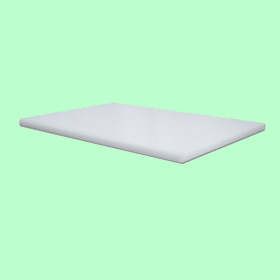

Le plastique HDPE, ou PEHD, abréviation de PolyEthylène Haute Densité, est un plastique synthétique qui possède plusieurs caractérisiques : il est opaque, résistant aux chocs, imperméable à l’eau, à certains produits chimiques, au gaz et aux arômes. Son utilisation est diverse mais il est principalement utilisé dans le cadre médical mais aussi dans les secteurs de l'alimentation, et de la chimie. On le retrouve à travers des exemples de la vie courante tels que les bouteilles de lait, de shampoing, des produits cosmétiques et même des poubelles. Le plastique HDPE doit donc être jeté dans le bac de tri (poubelle jaune).
